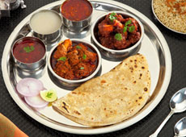
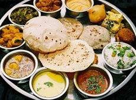
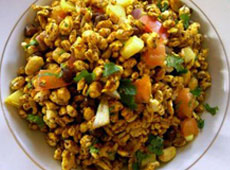

Batata Wada Pav :
Kolhapur is a foodie paradise. Kolhapuri food is world famous for its taste &Traditional Delicacies. Though it is being misrepresented as very spicy food worldwide, but the truth is that it is very less spicy, & the unique taste being due to the use of typical kolhapuri homemade masalas (spices mixture), & Onion Garlic chutney. So if you have to taste the real kolhapuri food, you have to travel to the lovely city of kolhapur, where People of Kolhapur love to show their hospitality by serving variety of kolhapuri dishes in their traditional “PAHUNCHAR’. All stand alone restaurants to star category hotels in kolhapur serve all the traditional kolhapuri dishes & thalis.
The sumptuous and filling breakfast dish tastes like nowhere else in the country. Traditionally a mixture of boiled moth beans,
potatoes, farsan, sev and kat, a spicy soup like gravy made with garam masala, onions, tomatoes, garlic, ginger and dry and wet
coconut. This fiery morning breakfast can get tourists going with its pungent flavors and tantalizing aromas always accompanied by
bread(pav).Available at almost all restaurants & breakfast joints.
Batata Wada Pav :
The kolhapuri wada pav is as bigger sized batata wada served with typical bread slice with chutney & fried green chillies. It’s a simple preparation of potato sabzi balls dipped in gram flour batter & deep fried. The tempting smell of wadas cant leave you without having a bite of it. Available at almost all restaurants & breakfast joints, roadside eateries.
Kolhapur is known for non-vegetarian meal. Tambada rassa and Pandhara rassa, dry and fried mutton, and mutton pickle . Even though eaten in the restaurant it’s Maratha household flavor can be experienced. Kheema Balls Rice is also well known as a special dish as Golyachi Biryani. Tambada Rassa is a mutton soup generally hot & spicy, red in colour , while Pandhara Rassa is Mutton soup prepared by using white coconut milk and hot spices without chilly. Tambda & Pandhara Rassa are served along with the main course as accompaniments. Kolhapuri mutton masala & Mutton sukke (dry) are tender pieces of lamb meat cooked in a traditional way with special kolhapuri chutneys & masalas. Available at almost all restaurants , household eateries (khanavals) ,mainly served in thalis .
Vegetarian meal comprises of pithala and bhakari, leafy and sprouted vegetables with dahi (curd) or butter milk. Servings of the meal in traditional Marathi style proves that the goddess Annapurna ( Goddess for meal) has flavored Kolhapurians. Available at almost all restaurants , household eateries (khanavals) , mainly served in thalis .
Tongue teasing , mouthwatering bhel is made from puffed rice & farsan & is a great evening time snack. Mostly served in roadside eateries also available near Keshavrao Bhosale Hall & Rankala Chowpaty.